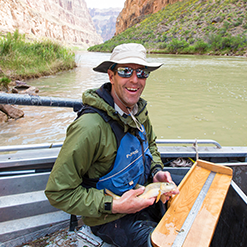

Project Information
The Arizona Game and Fish Department (AZGFD) is responsible for managing fish in the state of Arizona. A challenge they have been faced with is collecting a high volume of data from rainbow trout fish such as their growth rates, movement, and overall survival. Currently they have scientists going out 3-4 times a year to collect data with specialized tools, but AZGFD wants a way for the everyday angler to be able to gather and update information on these trout.
By creating a mobile application that allows local anglers and guides to collect data, we streamline that process and provide the angler with the ability to obtain that information themselves, without the need to contact a scientist.
Envisioned Solution
Our envisioned solution would be a cross-platform mobile application that allows local anglers to effortlessly gather and view data on fish they catch. While the development of an application would help manage the Lees Ferry fishery, this application could also be used by others that utilize a mark recapture program and PIT tags in their research. There are multiple mark-recapture programs around the country and the world that would benefit from the development of this application.
Sponsor Information
David Rogowski PHD
Wildlife Specialist Regional Supervisor
Arizona Game and Fish Department
Mentor Information

Vahid Nikoonejad Fard
Capstone Mentor
Northern Arizona University